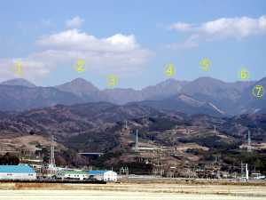
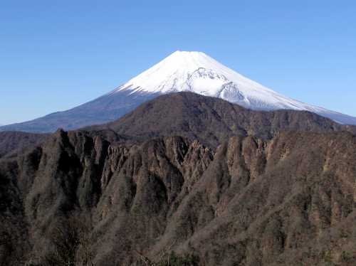
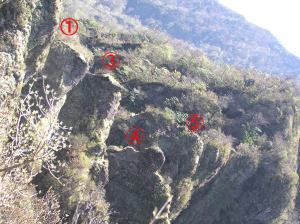
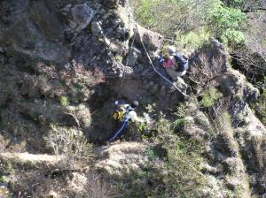
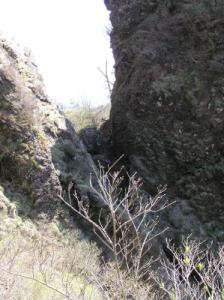
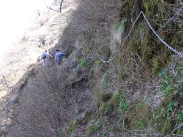

| 愛鷹山に登ろう |
| 登山地図コースへ（クリック） |
（A3サイズですのでＡ４に縮小印刷して下さい。）
浮島工業団地北側には愛鷹山がそびえ立っています。
富士山の廻りの山々は登ったですが
地元にこんな山があるのは最近になって分かりました。
越前岳、黒岳、鋸岳、大岳、呼子岳、位牌岳、袴腰岳、前岳、愛鷹山、これら山々を総称して
愛鷹山と言っているようです。
越前岳はテレビ塔（電波中継塔）からで登山は観光バスで登山者でにぎわいますが
南側は男性単独の人が多く静かな山です。
須津山荘・沢山橋付近にはこの山はハイキングに適しませんと警告看板がついています。
位牌岳で会った長泉の外人さんは私はこの山でここ１０年間で５人ぐらいなくなったのを知っている。
などと話てくれました。
昔登山をした先輩たちはささ山や林で迷ったとかの話はよく聞きます。
以前知り合いから貰った地図でこの山に登りひどい目にあいました。
正しい地図があればこの山は安心です。
特に、長雨の後の鋸岳や割石沢は危険です。
しかしながら、最近は鋸岳縦走路１箇所を除き、ステンレスの鎖の取り付けで整備されています。
関係者のご努力に非常に感謝しています。
この山で嫌な場所は鋸岳の鎖のないナイフリッジ部５ｍと
割石沢の谷にひっかかっている岩を登る時です。
従って、近年は鋸岳縦走路も女性もよく見かけます。
でも、足場の脆いのはこの山特徴です。注意しましょう。
池の平や水神社からのハイキングコースはよくできた道です。
大岳もコースを整備されて道を外れなければ安心です。
この山は夏は霧がかかりやすく冬は雪は少ないです。
晩秋から初冬は比較的天気が良いです。
つい2004.01.25に柳沢橋から愛鷹山に登ったですが途中で会った人は誰もいませんでした。
静かな山はゴミも少なくスーパー袋での女房のゴミ拾いは楽でした。
林道に出た途端おびただしいゴミでゴミ拾いをあきらめました。
この地図は愛鷹山のHomePageの地図を参考に書きました。( 下図 1/25,000地形図 参考 ）
花子で描き一太郎で拡大しました。
 |
浮島工業団地付近から見える 愛鷹山 ①越前岳 ②大岳 ③鋸岳 ④位牌岳 ⑤袴腰岳 ⑥馬場平 ⑦愛鷹山 沼津の桃里付近から見ると③の左に鋸岳のギザギザと呼子岳の小突起で見られます。 |
 |
2003.12.14 位牌岳から 一服峠の間で 見えた富士山 です。 富士山の前は越前岳です。 鋸岳の山肌の ゴツゴツと 後ろに見える 富士山の 組合せは 絶景です。 |
 蓬莱山（鋸岳の一部）下り付近（2004.04.29） 鋸の歯、手前から、１歯、３歯、４歯、５歯 と見える。２－３歯間を第１ルンゼ、 ４－５歯間を間第２ルンゼ、 ５歯の向こうが第３ルンゼ と言うらしい。 |
 須津川側へ下りる道です。この辺は 危険箇所です。 |
 第２ルンゼ 南面、北面の通り道 ここも鎖場で危険箇所です。 |
 位牌岳北面トラバース。 この後鎖直登あり。 ここは注意箇所です。 |